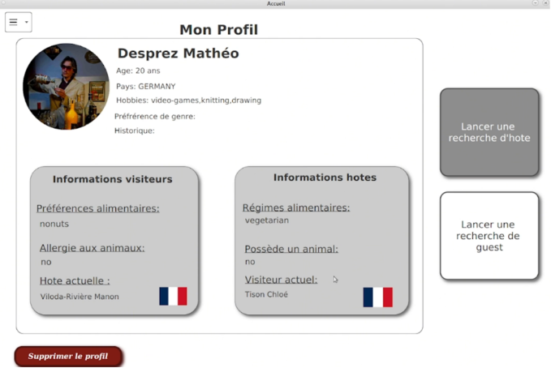
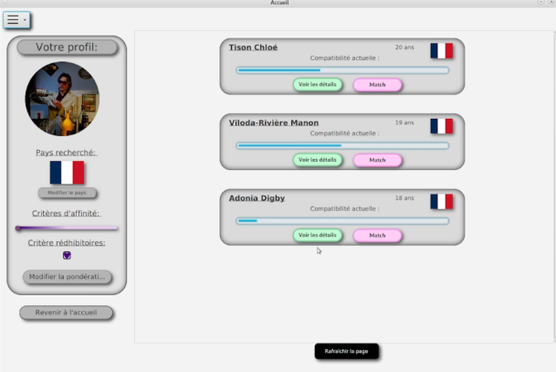
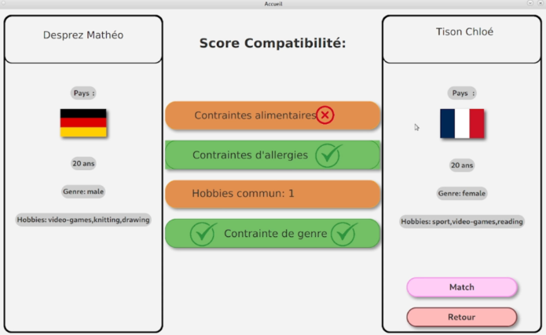
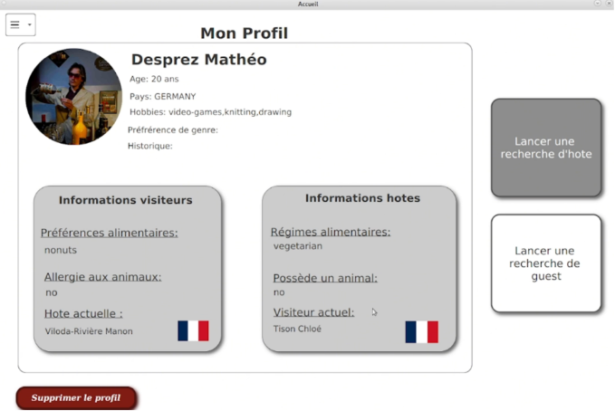
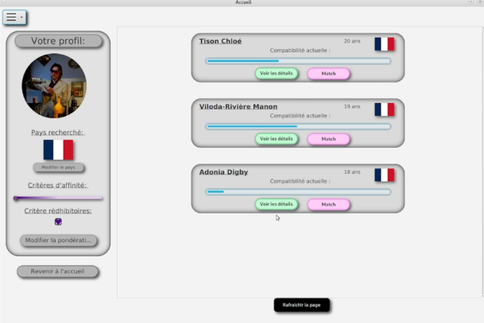
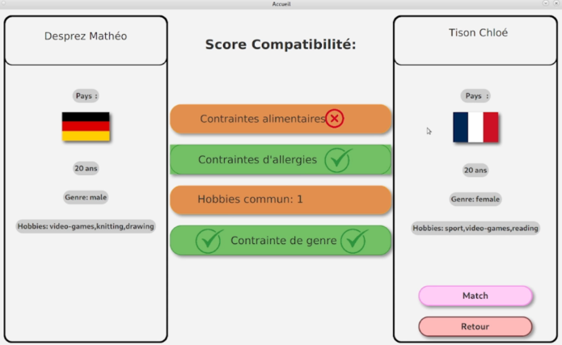

Organisation de séjours linguistiques
Description du Projet
Ce projet consiste en la réalisation d’une application JavaFX destinée à faciliter le rapprochement entre étudiants hôtes et visiteurs dans le cadre d’échanges internationaux. L’objectif était de concevoir une interface claire, intuitive et agréable, centrée sur l’expérience utilisateur, tout en appliquant les principes fondamentaux du design IHM.
L’application permet de consulter un profil, rechercher des hôtes ou visiteurs selon différents critères, visualiser les degrés d’affinité via des barres de compatibilité, et naviguer facilement entre les différentes pages. Plusieurs mécaniques de sécurité ont été intégrées : vérification des actions sensibles (suppression de profil), prévention des erreurs utilisateur, messages d’avertissement et parcours guidé.
Le développement s’appuie sur JavaFX, une modélisation structurée des vues, et des maquettes Figma préalablement conçues. Une attention particulière a été portée à l’ergonomie : menus accessibles, éléments cohérents, retours visuels clairs, codes couleur pour l’affinité (rouge → incompatible, orange → moyenne, vert → compatible), et éléments interactifs comme sliders et barres de progression.
Le travail a été réparti entre les membres de l’équipe selon leurs compétences ::
- Développement JavaFX et intégration des interfaces (M.Desprez & M.Ung)
- Création des données utilisateurs et assistance conception (C.Tison)
- Réalisation commune des maquettes Figma, de la documentation et des décisions visuelle
Le projet a permis de mettre en œuvre des compétences en JavaFX, conception d’IHM, architecture multi-scènes, création de maquettes, interactions utilisateur et gestion d’événements. Le résultat est une application fonctionnelle, propre, cohérente et agréable à utiliser, pensée pour accompagner l’utilisateur dans chaque étape de son parcours.
Galerie d'images
 




